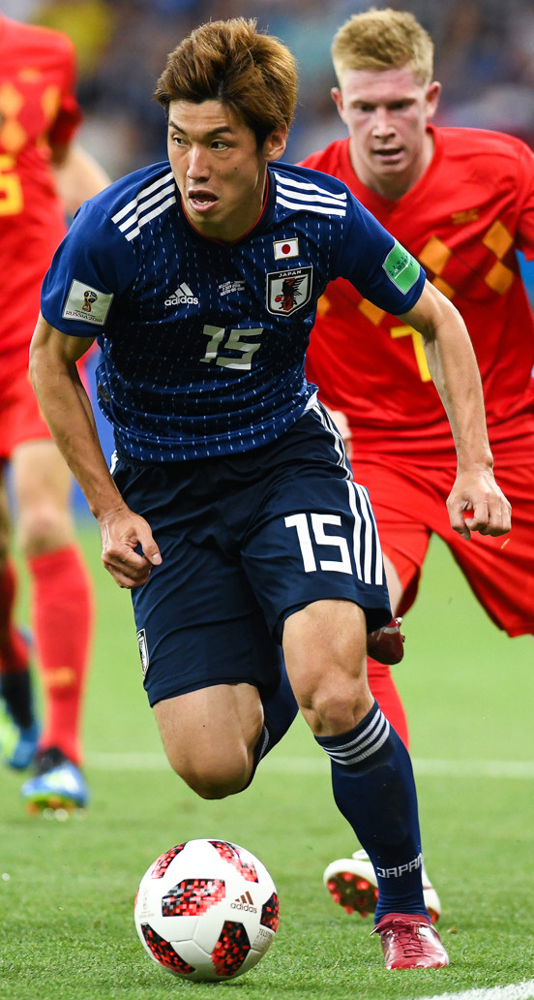

Yuya Osako
Position: Forward
Club: Vissel Kobe
Bio: Former German Bundesliga player, J1 League top scorer candidate.
Position: Forward
Club: Vissel Kobe
Bio: Former German Bundesliga player, J1 League top scorer candidate.

Position: Midfielder
Club: Vissel Kobe
Bio: Legendary former Barcelona player who brought world-class experience to the J.League.